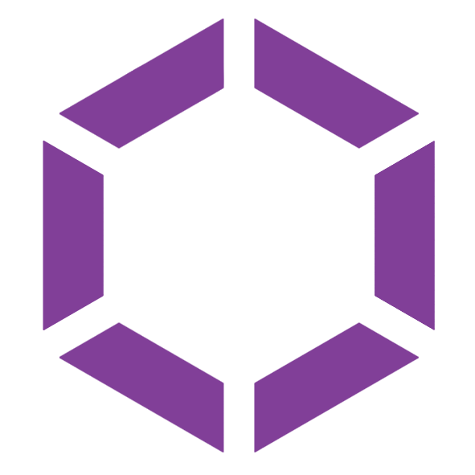
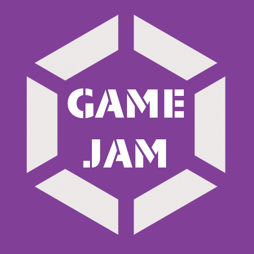
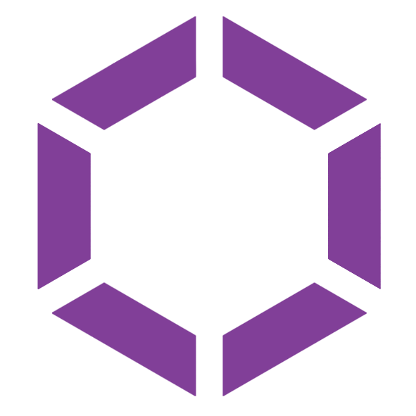
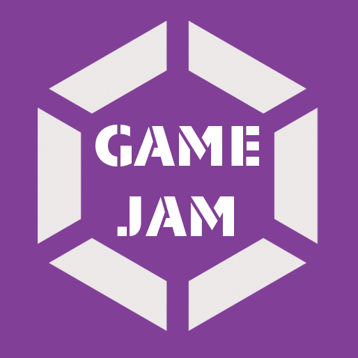
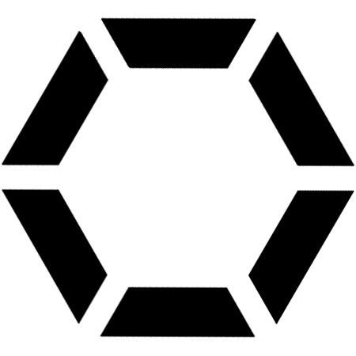
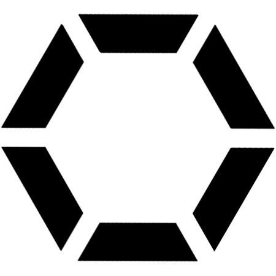

Brand
Graphite is a crystalline form of the element carbon with its atoms arranged in a hexagonal structure. It occurs naturally in this form and is the most stable form of carbon under standard conditions. Under high pressures and temperatures it converts to diamond. Graphite is used in pencils and lubricants.
Grafit (Graphite) comes from word graphics and FIT (an acronym for
Faculty of Information Technology). The history of the group can be dated to
2014 when a young group of creative students with an interest in the field
of graphics created an eponymous and unofficial group. As part of these
students remain active on the faculty, the group became an official research
group in the fall of 2019 and started to form new graphics-related teaching
programs.
Graphic manual
Font and spacing
Notwithstanding coming from acronym FIT, the correct capitalise is using uppercase "G" and lowercase "rafit." The prefered font is Lato (Black 900) or Technica stencil.
Color
As color lego utilized purple plum shade: hex #813F98, rgb(129,63,152)
Shape
The hexagonal shape is placed in square background and comes in small and large variant.
Small logo variant is tighly surrounded by 18px and 50px boundaries.
Large logo variants consist of 1.7 larger square than a hex radius. The hexagonal logo is placed in opptical center of a square.
Hex
Logo symbolise graphite hexagon structure. Visually is easy to both recognize and remember and easy to expand. Logo comes with original version, inverted version and in modified black and white version for specific purpose.
Logo can be combined with text placed at optic midpoint (short text, i.e. lecture acronym as VHS or PGA) or longer text placed below.
Rotated version can be used in very spacific cases when logo context is primary vertical.
Squared color, color inverted, squared color with text
 



Black and white version, bw with text, vertical version

.png) 

Full version - horisontal
.png)
.png)
Full version - vertical
.png)
.png)
Group Abbrevitation
.png)
Labs
Laboratories as primary technical workplace uses more technical logos with a clearly recognizable, uniform pixel pattern of 7x7 grid.
The logos should represent main letters from name of the lab e.g. G and L for Glab or V and R for VR lab.
As various combinations are possible, there are some suggestion:
- the letters should be mainly rectangular
- major part of logo should be filled (black)
- in special cases the letters can be supplemented by simple graphics
Glab
SAGElab
Ulab
VRlab